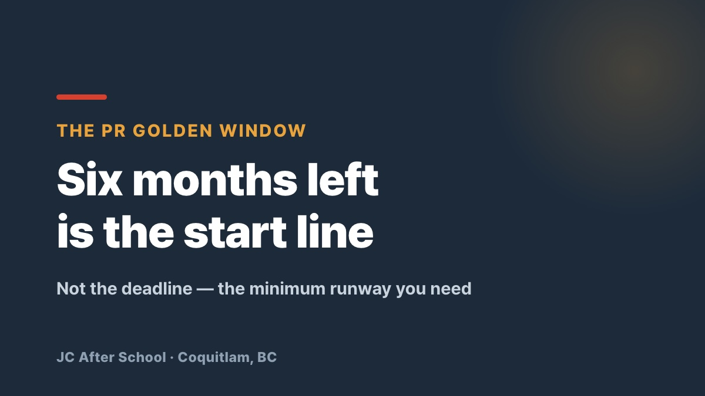

"My Visa Still Has Six Months" — You Are Already Running Late

"I still have more than six months on my visa, so I'm fine." Sorry — you are already running late.
Are you working in Canada on a permit right now, quietly hoping your employer will just renew the LMIA when the time comes?
Let that hope go. If you wait until two or three months before expiry, all it takes is your employer saying "sorry, not this time" and it is over. At that point there is no time left to do anything except look at flights home.
The last real window to stay in Canada without a gap in your career — and without depending on your employer's goodwill — is while you still have six months or more.
🔥 How long do you plan to keep asking for a favour?
You do not have to keep pleading for an LMIA that is expensive and slow for your employer. Flip the conversation around instead.
💬 "I'll get my French to NCLC 5. You skip the whole LMIA process and pay $230. I keep doing the same job in English, exactly as I do now."
A few clicks on a government portal and a $230 fee to legally keep a good employee — what employer says no to that? That is Francophone Mobility: it turns you from the person asking into the person offering a solution.
🚀 If the Express Entry scoreboard is making you despair
While everyone else fights for half a band in English, French-speaker category-based draws run at a dramatically lower cut-off. Work in English, get your PR through French — that is the smarter way to survive here.
⏳ The clock is running, and you only get one shot at this
If you come to us with one or two months left, there is genuinely nothing we can do. Six months is the minimum physical time needed to sit the French exam and convert your permit.
While you are still deciding, other people are already catching the last train. Do not spend another night worrying — get a concrete roadmap instead.
📞 Talk to us about your golden window
📞 Phone: 778-258-2223
💬 KakaoTalk: Open chat
📍 Location: #130 – 1140 Austin Ave, Coquitlam, BC (JC After School)